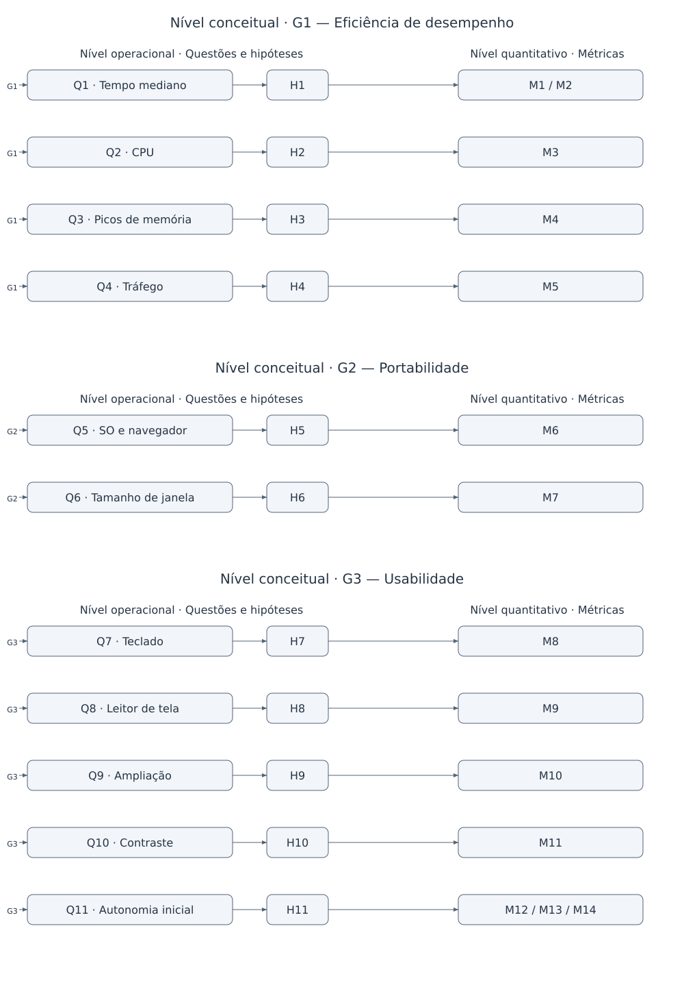

Diagrama GQM
Versão 1.3
O diagrama GQM apresentado nesta página resume a estrutura lógica da especificação elaborada na Fase 2. Ele organiza a relação entre os objetivos de medição (G), as questões de avaliação (Q) e as métricas (M), mantendo os mesmos identificadores utilizados nas demais páginas da documentação.
Essa representação facilita a leitura integrada da Fase 2 e ajuda a verificar se cada métrica está, de fato, vinculada a uma questão e se cada questão deriva de um objetivo coerente com os requisitos priorizados na Fase 1. Assim, o gráfico complementa as páginas de objetivos, questões e hipóteses, métricas e rastreabilidade.
A Figura 1 apresenta os níveis conceitual (G), operacional (Q e H) e quantitativo (M), separados visualmente por objetivo. As setas ligam cada objetivo às questões, cada questão à sua hipótese e cada hipótese à medida que permite verificá-la.

Figura 1 — Hierarquia GQM por objetivo, com questões, hipóteses e componentes de medição. Fonte: elaboração de Geovanna Umbelino e Camila Cavalcante com base nos requisitos R1–R5 da Fase 1.
1. Matriz resumida G–Q–H–M
A Tabela 1 explicita as mesmas ligações da Figura 1. As métricas são analisadas individualmente, conforme suas respectivas fichas das métricas.
| Objetivo | Questão | Hipótese | Métrica / componente |
|---|---|---|---|
| G1 | Q1 — Tempo mediano | H1 | M1 (tempo) e M2 (conclusão) |
| G1 | Q2 — CPU | H2 | M3 |
| G1 | Q3 — Picos de memória | H3 | M4 |
| G1 | Q4 — Tráfego | H4 | M5 |
| G2 | Q5 — SO e navegador | H5 | M6 |
| G2 | Q6 — Tamanho de janela | H6 | M7 |
| G3 | Q7 — Teclado | H7 | M8 |
| G3 | Q8 — Leitor de tela | H8 | M9 |
| G3 | Q9 — Ampliação | H9 | M10 |
| G3 | Q10 — Contraste | H10 | M11 |
| G3 | Q11 — Autonomia inicial | H11 | M12 (autonomia), M13 (erros) e M14 (tempo) |
Tabela 1. Relação entre objetivos, questões, hipóteses e métricas. Fonte: elaboração de Camila Cavalcante e Geovanna Umbelino
Referências
BASILI, Victor R.; CALDIERA, Gianluigi; ROMBACH, H. Dieter. The Goal Question Metric Approach. In: Encyclopedia of Software Engineering. John Wiley & Sons, 1994. p. 528–532.
Histórico de versões
| Versão | Data | Descrição | Responsável | Revisor |
|---|---|---|---|---|
| 1.0 | 18/10/2026 | Elaboração do diagrama GQM e da matriz de correspondência entre objetivos, questões e métricas. | Geovanna Umbelino | Pedro Lucas |
| 1.1 | 19/10/2026 | Atualização técnica da figura e da matriz com G1–G3, Q1–Q11, H1–H11 e as famílias M1–M5. | Camila Cavalcante | Pedro Lucas |
| 1.2 | 20/10/2026 | Renumeração das métricas para M1–M14 e atualização da figura e da matriz. | Geovanna Umbelino | Pedro Lucas |
| 1.3 | 21/10/2026 | Acrescenta referências bibliográficas usadas na elaboração do artefato | Camila Cavalcante | Pedro Lucas |